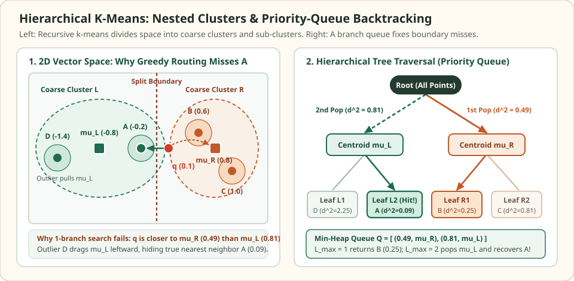

Hierarchical k-means: route through nested centroids with a branch queue
Flat IVF partitions a corpus into $K_{\text{list}}$ coarse Voronoi cells in a single layer, which still requires $O(K_{\text{list}}d)$ work to compare the query against every coarse centroid. Hierarchical k-means (HKM) replaces that flat codebook with a multi-way clustering tree: the root splits the corpus into $K_b$ clusters, and each cluster is recursively partitioned into $K_b$ sub-clusters until leaves hold at most $S_{\max}$ vectors.
Descending from the root to a single leaf takes only $O(K_b \log_{K_b} N)$ distance evaluations. However, because a cluster centroid summarizes the average position of all points in its subtree, a distant point inside a cluster can pull the centroid away from a near neighbor sitting near the boundary.
Trace how an outlier pulls a centroid away from the nearest neighbor
Four points · two cluster centroids · one priority queue
The query is $q=(0.1,0.0)$. Stored points are $A=(-0.2,0.0)$, $B=(0.6,0.0)$, $C=(1.0,0.0)$, and $D=(-1.4,0.0)$. The true nearest neighbor is $A$ at squared distance $0.09$. Yet $D$ pulls the left centroid to $\mu_L=(-0.8,0.0)$, making the right centroid $\mu_R=(0.8,0.0)$ closer to $q$ ($0.49 < 0.81$).


Fixed query q = (0.1, 0.0). Left cluster {A, D} has centroid (-0.8, 0.0); right cluster {B, C} has centroid (0.8, 0.0).
| ID and coordinates | Subtree | Subtree centroid | Squared L2(q, centroid) | Squared L2(q, vector) |
|---|---|---|---|---|
| A = (-0.2, 0.0) | Left {A, D} | (-0.8, 0.0) | 0.81 | 0.09 |
| B = (0.6, 0.0) | Right {B, C} | (0.8, 0.0) | 0.49 | 0.25 |
| C = (1.0, 0.0) | Right {B, C} | (0.8, 0.0) | 0.49 | 0.81 |
| D = (-1.4, 0.0) | Left {A, D} | (-0.8, 0.0) | 0.81 | 2.25 |
Scroll horizontally to compare the columns. Keyboard: focus the table, then use the left and right arrow keys.
Recursive k-means and logarithmic routing depth
Given branching factor $K_b \ge 2$ and maximum leaf size $S_{\max}$, hierarchical k-means constructs the tree top-down:
- If the current node's point set $S$ satisfies $|S| \le S_{\max}$, store $S$ as a contiguous leaf array of vector IDs.
- Otherwise, run k-means on $S$ to learn $K_b$ child centroids $\{\mu_1,\dots,\mu_{K_b}\}$, partition $S$ into $S_j = \{x\in S : j = \arg\min_m d(x, \mu_m)\}$, and recurse on each $S_j$.
When clusters are reasonably balanced, the tree depth and single-path routing cost are:
For $N=1{,}000{,}000$, $S_{\max}=64$, and $K_b=16$, descending a four-level tree evaluates $4\times 16 = 64$ centroids plus $64$ leaf vectors ($128$ distances total), compared with $15{,}625$ coarse centroid evaluations in a single-layer IVF index with the same leaf size.
Best-first branch-and-bound traversal in FLANN
Because greedy descent ($L_{\max}=1$ leaf) misses any neighbor that sits across a Voronoi boundary at any level of the tree, Muja and Lowe's FLANN algorithm maintains a global min-heap $Q$ of unvisited internal branches keyed by their squared centroid distance $d^2(q, \mu)$:
| Step | Queue action | What changes |
|---|---|---|
| Descend internal node | Score all $K_b$ child centroids; visit the closest child immediately | Push the remaining $K_b - 1$ children into min-heap $Q$ with key $d^2(q,\mu_j)$ |
| Reach a leaf | Score vectors in the leaf and update the top-$K$ result heap $W$ | Increment the count of inspected leaves or candidate vectors |
| Backtrack | Pop the smallest centroid distance from $Q$ while budget remains | Re-enter the next most promising subtree regardless of its depth in the tree |
Verify hierarchical k-means routing and priority-queue recovery in Python
import heapq
import numpy as np
q = np.array([0.1, 0.0])
points = {
"A": np.array([-0.2, 0.0]),
"B": np.array([0.6, 0.0]),
"C": np.array([1.0, 0.0]),
"D": np.array([-1.4, 0.0]),
}
def sq_l2(u, v):
diff = u - v
return float(np.dot(diff, diff))
hkm_root = {
"children": [
{"centroid": np.mean([points["A"], points["D"]], axis=0), "leaf": ["A", "D"]},
{"centroid": np.mean([points["B"], points["C"]], axis=0), "leaf": ["B", "C"]},
]
}
def search_hkm(root, query, max_leaves):
# Score root children; push all into min-heap by centroid distance
heap = []
for idx, child in enumerate(root["children"]):
cost = round(sq_l2(query, child["centroid"]), 4)
heapq.heappush(heap, (cost, idx, child["leaf"]))
inspected = []
scored = []
for _ in range(max_leaves):
if not heap:
break
cost, _, leaf = heapq.heappop(heap)
inspected.extend(leaf)
for pid in leaf:
scored.append((round(sq_l2(query, points[pid]), 4), pid))
scored.sort()
return scored[0], inspected
res_1, seen_1 = search_hkm(hkm_root, q, max_leaves=1)
res_2, seen_2 = search_hkm(hkm_root, q, max_leaves=2)
assert res_1 == (0.25, "B") and seen_1 == ["B", "C"]
assert res_2 == (0.09, "A") and seen_2 == ["B", "C", "A", "D"]
print("L_max=1:", res_1, "visited:", seen_1)
print("L_max=2:", res_2, "visited:", seen_2)When to prefer HKM over flat IVF or HNSW
Hierarchical k-means shines when you want low-memory routing without storing $O(NM)$ graph edges per vector, and when $K_{\text{list}}$ would be too large for a flat coarse quantizer. Its primary weakness is compounding boundary risk: an unlucky split at depth 1 separates a query from its neighbor before depth 2 or depth 3 is even reached, requiring priority-queue backtracking (L_max) or multiple randomized clustering trees to recover high recall.
Check the operating assumptions
Does a smaller centroid distance d(q, mu) guarantee that a subtree contains the nearest point?
No. A centroid is the mean of its cluster, not the closest member of its cluster to q. Wide or skewed clusters can place their centroid far from a boundary point that sits right next to q.
Why not always use a binary k-means tree (Kb = 2) instead of Kb = 16 or 32?
A binary tree has log2(N) levels of Voronoi boundaries instead of log16(N) levels. Every additional level introduces another split plane where the query can fall on the opposite side of its nearest neighbor.
Can hierarchical k-means certify that the returned neighbor is exact before visiting all leaves?
Only if each node also stores its bounding radius R_node (turning it into a Ball Tree) and the priority queue runs until every remaining branch satisfies d(q, mu) - R_node > d_best. Ordering by d(q, mu) alone with a fixed leaf budget is an approximate heuristic.
Sources
- Nister and Stewenius: Scalable Recognition with a Vocabulary Tree, CVPR 2006 (hierarchical k-means quantization).
- Muja and Lowe: Scalable Nearest Neighbor Algorithms for High Dimensional Data (FLANN), IEEE TPAMI 2014.